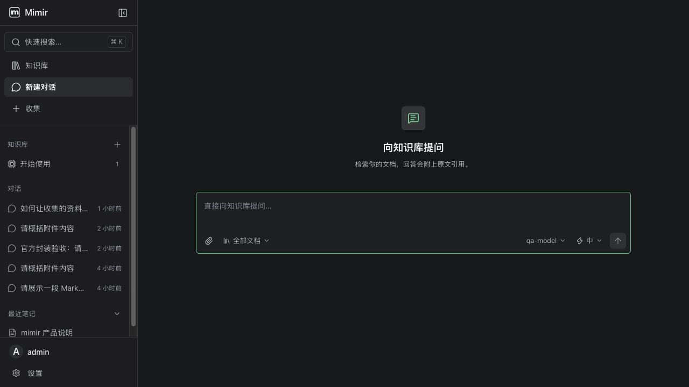
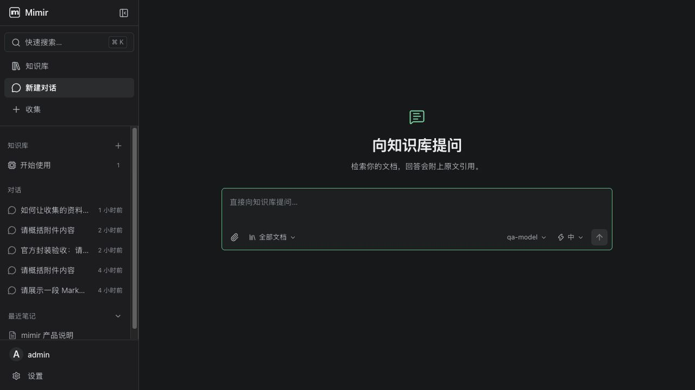

新对话页面 · 打磨前后渲染对比
2026-10-19 · 基于现有组件直接打磨，保留已确认的工具栏排列。所有图片来自真实浏览器渲染，离线可查看。
查看场景
真实页面 · 深色 · 1280 × 720
真实页面 · 深色 · 1093 × 873
真实组件场景 · 浅色 · 1440 × 900
真实组件场景 · 浅色 · 1100 × 760
真实组件场景 · 浅色 · 880 × 720
真实组件场景 · 浅色 · 600 × 720
真实组件场景 · 深色 · 1093 × 873
查看原始尺寸
打磨前
完整截图

打磨后
完整截图
